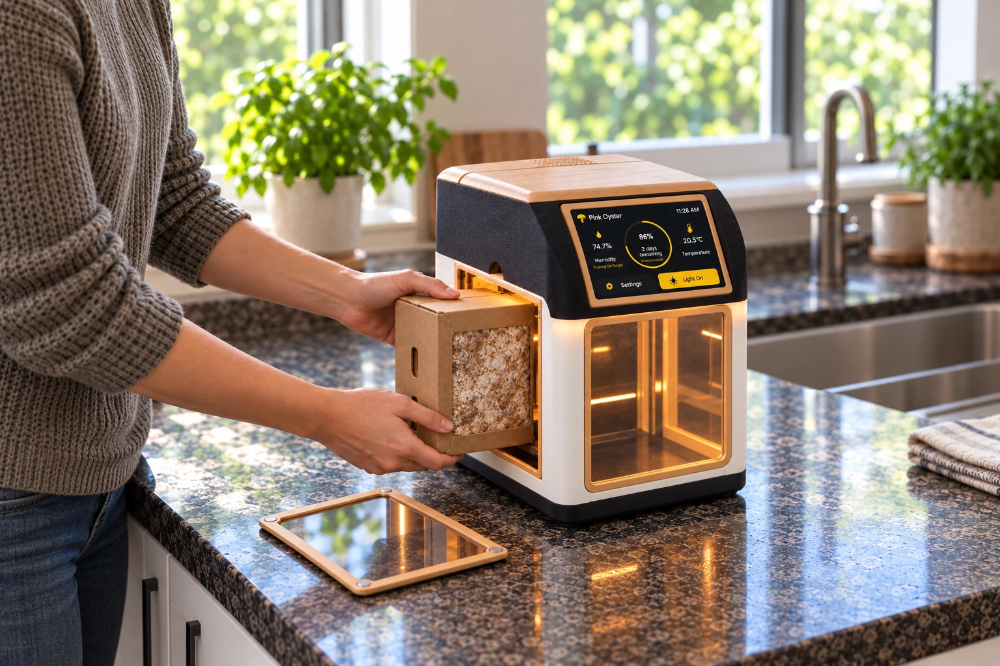

Indicative price
Single Cartridge
NZ$25
NZ$25 each
Mycelis In development
A countertop appliance that automates key parts of growing oyster mushrooms at home.

How it's designed to work
The chamber brings watering, humidity and airflow together so there's less to manage by hand.
Fill the reservoir, prepare one face of the cartridge, then slide it in through a removable side window.
Use the Classic button or Pro touchscreen. The machine is designed to manage water, humidity and airflow while you keep an eye on the crop.
Grow one face at a time. After harvesting, prepare the other face and turn the cartridge to try for another harvest. A second crop isn't guaranteed.
Side-loading cartridge
The design has three removable magnetic windows. Lift off a side window to slide the cartridge in, or remove the front window to reach into the chamber.
Leave room beside the appliance for loading. Final clearances will be confirmed after testing.

Planned model features
Choose tactile controls on Classic, or a touchscreen and more guidance on Pro. Both are designed to grow the same produce.

| Feature | Classic | Pro |
|---|---|---|
| Water delivery | Automatic | Automatic |
| Start / stop | Single button Screen-free | Touchscreen |
| Lighting | Button control | Automatic schedule |
| Harvest estimates | Not included | Species + room temperature |
| Active heating / cooling | None | None |
| Wi-Fi | Not required | Optional for date/time |
Neither model requires an app or cloud account for growing.
Classic uses a tactile start/stop button; hold it for three seconds to toggle the light. Pro uses a touchscreen for crop selection, temperature and humidity readings, light scheduling and harvest estimates.
Pro estimates use species and room temperature as a guide to timing, rather than a guaranteed harvest date.
Automatic water delivery, humidity control and fan control are intended for both models. Mycelis measures temperature and humidity: Classic uses readings internally where needed; Pro displays them. Measuring temperature does not mean regulating it. Neither model has active heating or cooling.

Development status · 17 November 2026
The October prototype grew pink oyster mushrooms using Mycelis's automated systems. We're refining airflow and reducing condensation on the windows.
Classic is in development. The Pro prototype is nearing completion, but it isn't ready for production. Orders and trials are not open.
All four models still need qualified electrical and product safety review before customer use. No formal approval has been obtained.
The current cleaning plan is to wipe down the growing area and hand-wash removable parts. Final instructions, material suitability and operating limits still need testing. Mycelis filter performance and spore, allergy and mould risks still need assessment. Final clearances, operating conditions, noise and electricity use have not been confirmed. Pro's harvest estimates aren't validated and do not guarantee a harvest date. Behaviour after a power interruption hasn't been validated.
Preliminary / indicative pricing · Not available to order
Early cartridges are planned to be made in-house, with fully colonised blocks ready to fruit after opening. The launch range is Blue Oyster, Italian Grey Oyster and Pink Oyster. All three have grown in development tests, and you'll be able to mix them in a pack.
Indicative price
NZ$25
NZ$25 each
Indicative price
NZ$45
NZ$22.50 each
Best per-cartridge value
Indicative price
NZ$60
NZ$20 each
Indicative NZ prices, excluding shipping. Prices may change and orders aren't open. We plan to deliver across New Zealand; rates and collection options are still to be confirmed.
Remove one cardboard cover and cut an X in the bag beneath it before the first grow. After harvesting, prepare the opposite face the same way and turn the cartridge. The second face may not fruit.
Storage and shelf-life guidance will be confirmed after testing. We aren't publishing a storage duration or refrigeration instructions yet.
Ready-to-grow or homemade
Homemade cartridges have grown mushrooms in Mycelis. Our current setup uses a grow bag inside cardboard. Bag-only growing hasn't been tested.
We'll provide basic DIY instructions and troubleshooting support. Compatible bag and cardboard dimensions or component options are still being finalised. Official refills are optional; no proprietary digital service or subscription is needed.
DIY crop results aren't guaranteed. These limits don't exclude your rights under the Consumer Guarantees Act. Consumer Protection guidance.
Why oyster mushrooms?
A hot pan, a little oil, garlic if you like. Or add them to noodles, eggs or a risotto. Growing them is interesting; having another ingredient to cook with is the reason to do it.
Reference data for raw oyster mushrooms include dietary fibre. How much ends up in a meal depends on the portion and how you prepare it. [1]
The same data list riboflavin (B2) and niacin (B3). They're useful details about the food, not a nutrient specification for a Mycelis cartridge. [1]
Pink oyster is the variety in our prototype. Published research on pink oysters has measured thiamine (B1) and riboflavin (B2), with levels affected by the growing substrate. That study didn't test a Mycelis harvest. [2]
Published food research, not measurements from a Mycelis harvest. Nutrition varies by crop, growing conditions and what you serve.
No. Start with one fruiting face. Turning the cartridge after harvesting is optional, and the second face may not fruit.
Cook oyster mushrooms before eating them, using clean hands and utensils. Use fresh mushrooms and discard any that are spoiled. See the University of Florida oyster-mushroom guidance for more information.
Yes. No app or cloud connection is required for growing. Wi-Fi on Pro is optional for setting the date and time.
Mycelis
Get news about the next build and hear when orders open.
Join the Waitlist